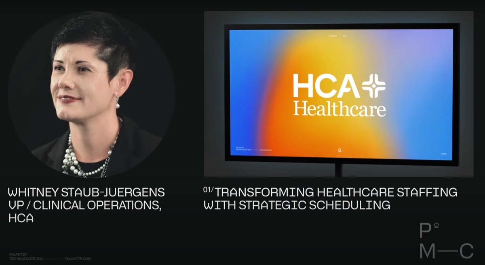
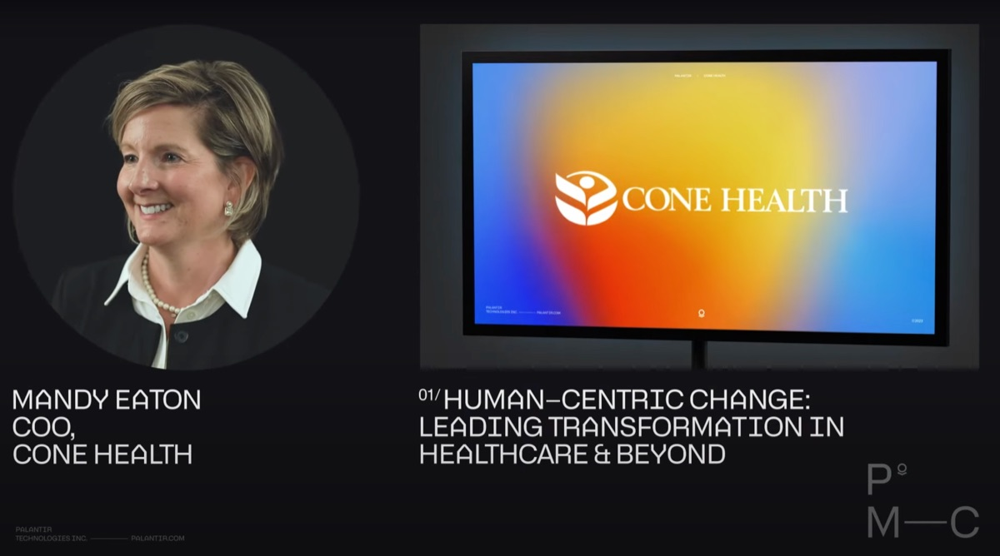
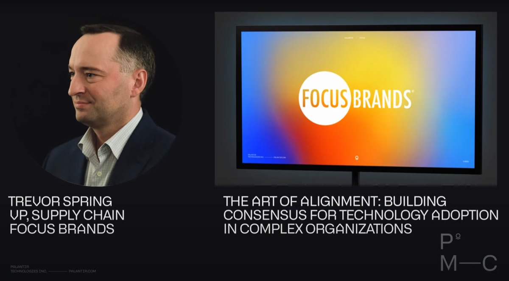
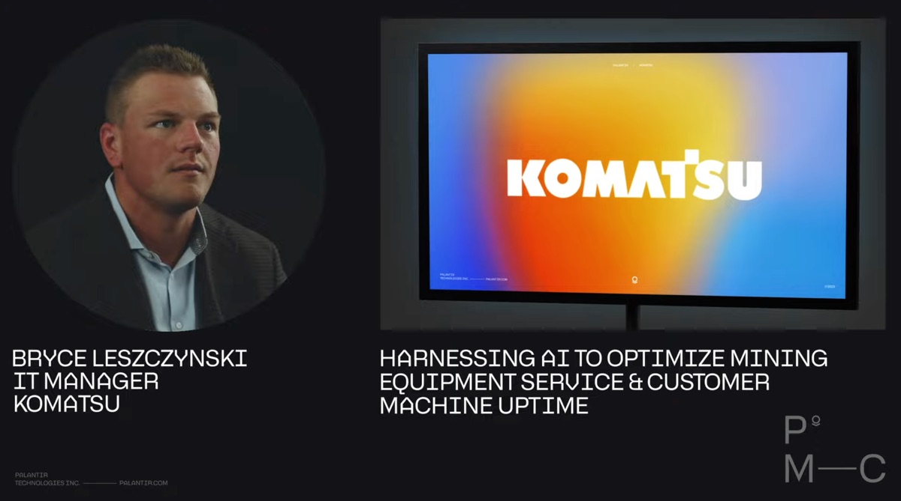
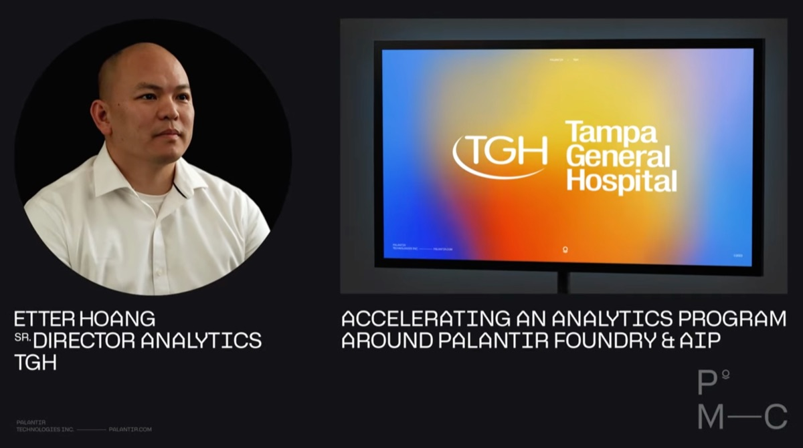

Palantir 大师课
向专家——我们的客户——学习如何驾驭企业 AI 的落地应用。
01 /
Palantir x HCA Healthcare
以战略性排班转变人员配置模式
“在与 Palantir 的合作中，我们得以生成能够保留员工超过 98% 偏好的排班方案。”
— Whitney Staub-Juergens | HCA 临床运营副总裁

播放视频
02 /
Palantir x Cone Health
以人为本的变革：引领医疗保健及更广泛领域的转型
“我们深知自己即将开展的工作将从根本上改变员工的作业方式，正因如此，我们选择与 Palantir 携手合作。”
— Mandy Eaton | Cone Health 首席运营官

播放视频
03 /
Palantir x Focus Brands
在复杂组织中为技术落地建立共识
“在部署 Foundry 不到 60 天的时间里，我们就达成了预期的成果。自那以后，我们又开发了六七个应用程序……”
— Trevor Spring | Focus Brands LLC 供应链副总裁

播放视频
04 /
Palantir x Komatsu
利用 AI 优化矿山设备服务与客户设备正常运行时间
“我们非常期待不仅能利用 Foundry，还能结合 AIP，来探索如何……极快地提升我们的运营卓越性。”
— Bryce Leszczynski | Komatsu IT 经理

播放视频
05 /
Palantir x Tampa General Hospital
加速推进围绕 Palantir Foundry 与 AIP 的分析项目
“我们发现患者的住院时间出现了相当大幅度的缩减……大约减少了 30%……”
“我们还看到人员配置比例的合理性有了显著提升……在达到合理比例方面，我们实现了约 84% 的改善……”
– Etter Hoang | Tampa General Hospital 高级分析总监

播放视频